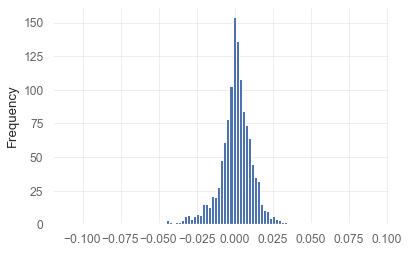

returns = pd.Series(np.array([0.03, 0.01, 0.05, -0.01, -0.03]))
compsum(returns)0 0.030000
1 0.040300
2 0.092315
3 0.081392
4 0.048950
dtype: float64compsum (returns)
Calculates cumulative compounded returns up to each day, for series of daily returns
0 0.030000
1 0.040300
2 0.092315
3 0.081392
4 0.048950
dtype: float64comp (returns)
Calculates total compounded return, for series of daily returns
distribution (returns, compounded=True, prepare_returns=False)
Show the returns and outlier values based on IQR from a series of returns. Outliers are those more than 1.5 times the IQR from the Q1/Q3
expected_return (returns, aggregate=None, compounded=True, prepare_returns=True)
Returns the expected geometric return for a given period by calculating the geometric holding period return
The expected geometric return is: \[ \left(\prod\limits_{i=1}^{n}(p_{i})\right)^{(1/n)} -1\]
where \(p_{i}\) is 1+ the daily return: \(p_{i}=\frac{v_{i}}{v_{i-1}}=1+r_{i}\), where \(v_{i}\) and \(r_{i}\) are value and return of the asset on day \(i\) respectively
returns = pd.Series(np.array([0.03, 0.01, 0.05, -0.01, -0.03]))
expected_return(returns, aggregate=None, compounded=True,
prepare_returns=True)0.009603773872040255ghpr (retruns, aggregate=None, compounded=True)
Shorthand for expected_return()
geometric_mean (retruns, aggregate=None, compounded=True)
Shorthand for expected_return()
outliers (returns, quantile=0.95)
Returns series of outliers: all values greater than the quantile
95 96
96 97
97 98
98 99
99 100
dtype: int32remove_outliers (returns, quantile=0.95)
Returns series of returns without the outliers on the top end
returns = pd.Series(np.arange(1, 101, 1))
remove_outliers(returns, quantile=.95).tail(10) # the range goes from [1,100] to [1,95]85 86
86 87
87 88
88 89
89 90
90 91
91 92
92 93
93 94
94 95
dtype: int32best (returns, aggregate=None, compounded=True, prepare_returns=False)
Returns the best day/month/week/quarter/year’s return
worst (returns, aggregate=None, compounded=True, prepare_returns=False)
Returns the worst day/month/week/quarter/year’s return
consecutive_wins (returns, aggregate=None, compounded=True, prepare_returns=False)
Returns the maximum consecutive wins by day/month/week/quarter/year
consecutive_losses (returns, aggregate=None, compounded=True, prepare_returns=False)
Returns the maximum consecutive losses by day/month/week/quarter/year
exposure (returns, prepare_returns=False)
Returns the market exposure time (returns != 0)
win_rate (returns, aggregate=None, compounded=True, prepare_returns=False)
Calculates the win ratio for a period: (number of winning days)/(number of days in market)
avg_return (returns, aggregate=None, compounded=True, prepare_returns=False)
Calculates the average return/trade return for a period
avg_win (returns, aggregate=None, compounded=True, prepare_returns=False)
Calculates the average winning return/trade return for a period
avg_loss (returns, aggregate=None, compounded=True, prepare_returns=False)
Calculates the average low if return/trade return for a period
volatility (returns, periods=252, annualize=True, prepare_returns=False)
Calculates the volatility of returns for a period
Calculate volatility as \(\text{vol.}=\sigma\sqrt{T}\) where \(\sigma\) is the standard deviations of returns and \(T\) the number of periods in the time horizon
rolling_volatility (returns, rolling_period=126, periods_per_year=252, prepare_returns=False)
Create time series of rolling volatility
Date
2022-09-16 0.248680
2022-09-19 0.248414
2022-09-20 0.248865
2022-09-21 0.249286
2022-09-22 0.248944
2022-09-23 0.248828
2022-09-26 0.248951
2022-09-27 0.248649
2022-09-28 0.249690
2022-09-29 0.251102
Name: Close, dtype: float64implied_volatility (returns, periods=252, annualize=False)
Calculates the implied volatility of returns for a period
Implied volatility is defined here as the standard deviation of the log returns. This works under the assumption that returns are lognormally distributed and so the log of returns is a normal distribution.
autocorr_penalty (returns, prepare_returns=False)
Metric to account for auto correlation
sharpe (returns, rf=0.0, periods=252, annualize=True, smart=False, prepare_returns=False)
Calculates the sharpe ratio of access returns If rf is non-zero, you must specify periods. In this case, rf is assumed to be expressed in yearly (annualized) terms Args: * returns (Series, DataFrame): Input return series * rf (float): Risk-free rate expressed as a yearly (annualized) return * periods (int): Freq. of returns (252/365 for daily, 12 for monthly) * annualize: return annualize sharpe? * smart: return smart sharpe ratio
smart_sharpe (returns, rf=0.0, periods=252, annualize=True)
Sharpe ratio, penalised with autocorrelation penalty
rolling_sharpe (returns, rf=0.0, rolling_period=126, annualize=True, periods_per_year=252, prepare_returns=False)
Calculate rolling Sharpe ratio over a period
Date
2022-09-16 -0.864632
2022-09-19 -0.891301
2022-09-20 -0.979586
2022-09-21 -1.211758
2022-09-22 -1.177445
2022-09-23 -1.433826
2022-09-26 -1.551825
2022-09-27 -1.631454
2022-09-28 -1.566138
2022-09-29 -1.674526
Name: Close, dtype: float64sortino (returns, rf=0, periods=252, annualize=True, smart=False, prepare_returns=False)
Calculates the sortino ratio of access returns If rf is non-zero, you must specify periods. In this case, rf is assumed to be expressed in yearly (annualized) terms Calculation is based on this paper by Red Rock Capital http://www.redrockcapital.com/Sortino__A__Sharper__Ratio_Red_Rock_Capital.pdf
Calculates Sortino ratio as \(\frac{\text{Expected Excess Return}}{\text{Downside Deviation}}\) where for \(n\) periods the Downside deviation is \(\sqrt{\frac{\sum d^{2}}{n}}\) where \(d\) is an excess return less than 0, and the expected excess return is the mean excess return, and annualised
smart_sortino (returns, rf=0, periods=252, annualize=True)
Calculates Smart Sortino ratio, adding an autocorrelation penalty
def adjusted_sortino(returns, rf=0, periods=252, annualize=True, smart=False):
"""
Jack Schwager's version of the Sortino ratio allows for
direct comparisons to the Sharpe. See here for more info:
https://archive.is/wip/2rwFW
"""
data = sortino(
returns, rf, periods=periods, annualize=annualize, smart=smart)
return data / sqrt(2)The adjusted sortino is defined as \(\text{Adj. Sortino}=\text{Sortino}/\sqrt{2}\)
rolling_sortino (returns, rf=0, rolling_period=126, annualize=True, periods_per_year=252, **kwargs)
Date
2022-09-16 -1.119173
2022-09-19 -1.152463
2022-09-20 -1.264410
2022-09-21 -1.554069
2022-09-22 -1.511805
2022-09-23 -1.826545
2022-09-26 -1.972788
2022-09-27 -2.071153
2022-09-28 -1.996554
2022-09-29 -2.124861
Name: Close, dtype: float64skew (returns, prepare_returns=False)
Calculates returns’ skewness (the degree of asymmetry of a distribution around its mean)
The skew is defined as \(\text{Skew}(X)=\frac{E[(X-\mu)^{3}]}{E[(X-\mu)^{2}]^{3/2}}=\frac{\mu_{3}}{\sigma^{3}}\), where \(\mu\) is mean, \(\sigma\) stadard deviation and \(\mu_{3}\), third moment of inertia.
kurtosis (returns, prepare_returns=False)
Calculates returns’ kurtosis (the degree to which a distribution peak compared to a normal distribution)
The kurtosis is defined as \(\text{Kurt}(X)=\frac{E[(X-\mu)^{4}]}{E[(X-\mu)^{2}]^{2}}=\frac{\mu_{4}}{\sigma^{2}}\), where \(\mu\) is mean, \(\sigma\) stadard deviation and \(\mu_{4}\), fourth moment of inertia. A measure of ‘tailed’: higher kurtosis means fatter tails.
<AxesSubplot:ylabel='Frequency'>
probabilistic_ratio (series, rf=0.0, base='sharpe', periods=252, annualize=False, smart=False)
probabilistic_sharpe_ratio (series, rf=0.0, periods=252, annualize=False, smart=False)
The probabilistic Sharpe Ratio
0.8816407449051655probabilistic_sortino_ratio (series, rf=0.0, periods=252, annualize=False, smart=False)
The probabilistic Sortino Ratio
0.9456555568118186probabilistic_adjusted_sortino_ratio (series, rf=0.0, periods=252, annualize=False, smart=False)
The probabilistic adj. Sortino Ratio
0.8730193107071486omega (returns, rf=0.0, required_return=0.0, periods=252, **kwargs)
Determines the Omega ratio of a strategy. See https://en.wikipedia.org/wiki/Omega_ratio for more details.
This is broken
gain_to_pain_ratio (returns, rf=0, resolution='D', **kwargs)
Jack Schwager’s GPR. See here for more info: https://archive.is/wip/2rwFW
This seems to be wrong
cagr (returns, rf=0.0, compounded=True, **kwargs)
Calculates the communicative annualized growth return (CAGR%) of access returns If rf is non-zero, you must specify periods?. In this case, rf is assumed to be expressed in yearly (annualized) terms
Check
rar (returns, rf=0.0, **kwargs)
Calculates the risk-adjusted return of access returns (CAGR / exposure. takes time into account.) If rf is non-zero, you must specify periods. In this case, rf is assumed to be expressed in yearly (annualized) terms
Check if this should be excess return
max_drawdown (returns)
Calculates the maximum drawdown
to_drawdown_series (returns)
Convert returns series to drawdown series
Date
2022-09-16 -0.183555
2022-09-19 -0.177223
2022-09-20 -0.186668
2022-09-21 -0.200855
2022-09-22 -0.207568
2022-09-23 -0.220845
2022-09-26 -0.228553
2022-09-27 -0.230522
2022-09-28 -0.215382
2022-09-29 -0.231771
Name: Close, dtype: float64calmar (returns, prepare_returns=False)
Calculates the calmar ratio (CAGR% / MaxDD%)
ulcer_index (returns)
Calculates the ulcer index score (downside risk measurment)
Define properly
ulcer_performance_index (returns, rf=0)
Calculates the ulcer index score (downside risk measurment)
upi (returns, rf=0)
Shorthand for ulcer_performance_index()
risk_of_ruin (returns, prepare_returns=False)
Calculates the risk of ruin (the likelihood of losing all one’s investment capital)
Check definition
ror (returns)
Shorthand for risk_of_ruin()
value_at_risk (returns, sigma=1, confidence=0.95, prepare_returns=False)
Calculats the daily value-at-risk (variance-covariance calculation with confidence n)
Define
var (returns, sigma=1, confidence=0.95, prepare_returns=False)
Shorthand for value_at_risk()
conditional_value_at_risk (returns, sigma=1, confidence=0.95, prepare_returns=False)
Calculats the conditional daily value-at-risk (aka expected shortfall) quantifies the amount of tail risk an investment
-0.03378474064120063cvar (returns, sigma=1, confidence=0.95, prepare_returns=False)
Shorthand for conditional_value_at_risk()
expected_shortfall (returns, sigma=1, confidence=0.95, prepare_returns=False)
Shorthand for conditional_value_at_risk()
serenity_index (returns, rf=0)
Calculates the serenity index score (https://www.keyquant.com/Download/GetFile?Filename=%5CPublications%5CKeyQuant_WhitePaper_APT_Part1.pdf)
tail_ratio (returns, cutoff=0.95, prepare_returns=False)
Measures the ratio between the right (95%) and left tail (5%).
payoff_ratio (returns, prepare_returns=False)
Measures the payoff ratio (average win/average loss)
Should probably rate this by win rate/loss rate
win_loss_ratio (returns, prepare_returns=False)
Shorthand for payoff_ratio()
profit_ratio (returns, prepare_returns=False)
Measures the profit ratio (win ratio / loss ratio)
profit_factor (returns, prepare_returns=False)
Measures the profit ratio (wins/loss)
cpc_index (returns, prepare_returns=False)
Measures the cpc ratio (profit factor * win % * win loss ratio)
common_sense_ratio (returns, prepare_returns=False)
Measures the common sense ratio (profit factor * tail ratio)
outlier_win_ratio (returns, quantile=0.99, prepare_returns=False)
Calculates the outlier winners ratio 99th percentile of returns / mean positive return
outlier_loss_ratio (returns, quantile=0.01, prepare_returns=False)
Calculates the outlier losers ratio 1st percentile of returns / mean negative return
recovery_factor (returns, prepare_returns=False)
Measures how fast the strategy recovers from drawdowns
risk_return_ratio (returns, prepare_returns=True)
Calculates the return / risk ratio (sharpe ratio without factoring in the risk-free rate)
drawdown_details (drawdown)
Calculates drawdown details, including start/end/valley dates, duration, max drawdown and max dd for 99% of the dd period for every drawdown period
returns = _utils.download_returns('SPY', '5y')
drawdown = to_drawdown_series(returns)
drawdown_details(drawdown).tail(10)| start | valley | end | days | max drawdown | 99% max drawdown | |
|---|---|---|---|---|---|---|
| 86 | 2021-09-03 | 2021-10-04 | 2021-10-20 | 47 | -5.114137 | -5.003459 |
| 87 | 2021-10-22 | 2021-10-22 | 2021-10-25 | 3 | -0.103615 | 0.000000 |
| 88 | 2021-10-27 | 2021-10-27 | 2021-10-28 | 1 | -0.443010 | 0.000000 |
| 89 | 2021-11-09 | 2021-11-10 | 2021-11-16 | 7 | -1.132363 | -1.100381 |
| 90 | 2021-11-17 | 2021-11-17 | 2021-11-18 | 1 | -0.242927 | 0.000000 |
| 91 | 2021-11-19 | 2021-12-01 | 2021-12-10 | 21 | -4.093850 | -3.472205 |
| 92 | 2021-12-13 | 2021-12-20 | 2021-12-23 | 10 | -3.008357 | -1.965921 |
| 93 | 2021-12-28 | 2021-12-28 | 2021-12-29 | 1 | -0.081728 | 0.000000 |
| 94 | 2021-12-30 | 2021-12-31 | 2022-01-03 | 4 | -0.527776 | -0.276447 |
| 95 | 2022-01-04 | 2022-09-29 | 2022-09-29 | 268 | -23.177148 | -23.009976 |
kelly_criterion (returns, prepare_returns=False)
Calculates the recommended maximum amount of capital that should be allocated to the given strategy, based on the Kelly Criterion (http://en.wikipedia.org/wiki/Kelly_criterion)
r_squared (returns, benchmark, prepare_returns=True)
Measures the straight line fit of the equity curve
r2 (returns, benchmark)
Shorthand for r_squared()
information_ratio (returns, benchmark, prepare_returns=True)
Calculates the information ratio (basically the risk return ratio of the net profits)
greeks (returns, benchmark, periods=252.0, prepare_returns=True)
Calculates alpha and beta of the portfolio
beta 0.766525
alpha -0.014009
dtype: float64rolling_greeks (returns, benchmark, periods=252, prepare_returns=True)
Calculates rolling alpha and beta of the portfolio
| beta | alpha | |
|---|---|---|
| Date | ||
| 2022-09-16 | 0.711193 | -0.000020 |
| 2022-09-19 | 0.711200 | -0.000020 |
| 2022-09-20 | 0.711199 | -0.000020 |
| 2022-09-21 | 0.712228 | -0.000020 |
| 2022-09-22 | 0.711855 | -0.000020 |
| 2022-09-23 | 0.712161 | -0.000020 |
| 2022-09-26 | 0.712399 | -0.000020 |
| 2022-09-27 | 0.712574 | -0.000020 |
| 2022-09-28 | 0.713869 | -0.000021 |
| 2022-09-29 | 0.714026 | -0.000021 |
treynor_ratio (returns, benchmark, periods=252.0, rf=0.0, prepare_returns=True)
Calculates the Treynor ratio Args: * returns (Series, DataFrame): Input return series * benchmatk (String, Series, DataFrame): Benchmark to compare beta to * periods (int): Freq. of returns (252/365 for daily, 12 for monthly)
compare (returns, benchmark, aggregate=None, compounded=True, round_vals=None, prepare_returns=True)
Compare returns to benchmark on a day/week/month/quarter/year basis
| Returns | Benchmark | Multiplier | Won | |
|---|---|---|---|---|
| (2021, 10) | 7.016350 | 7.864013 | 0.892210 | - |
| (2021, 11) | -0.803480 | 1.996842 | -0.402376 | - |
| (2021, 12) | 4.624778 | 1.152342 | 4.013372 | + |
| (2022, 1) | -5.274126 | -8.747021 | 0.602963 | + |
| (2022, 2) | -2.951699 | -4.475968 | 0.659455 | + |
| (2022, 3) | 3.759043 | 4.667878 | 0.805300 | - |
| (2022, 4) | -8.776911 | -13.595739 | 0.645563 | + |
| (2022, 5) | 0.225728 | -1.586593 | -0.142272 | + |
| (2022, 6) | -8.246043 | -8.907885 | 0.925702 | + |
| (2022, 7) | 9.208745 | 12.551730 | 0.733663 | - |
| (2022, 8) | -4.080199 | -5.132186 | 0.795022 | + |
| (2022, 9) | -7.819145 | -8.992359 | 0.869532 | + |
Note that these returns are already formatted in percentage terms
monthly_returns (returns, eoy=True, compounded=True, prepare_returns=True)
Calculates monthly returns
| JAN | FEB | MAR | APR | MAY | JUN | JUL | AUG | SEP | OCT | NOV | DEC | EOY | |
|---|---|---|---|---|---|---|---|---|---|---|---|---|---|
| 2017 | 0.000000 | 0.000000 | 0.000000 | 0.000000 | 0.000000 | 0.000000 | 0.000000 | 0.000000 | 0.000000 | 0.019142 | 0.030566 | 0.012128 | 0.063031 |
| 2018 | 0.056359 | -0.036360 | -0.027411 | 0.005168 | 0.024309 | 0.005751 | 0.037047 | 0.031920 | 0.005945 | -0.069104 | 0.018549 | -0.088049 | -0.045690 |
| 2019 | 0.080066 | 0.032416 | 0.018100 | 0.040852 | -0.063771 | 0.069586 | 0.015119 | -0.016743 | 0.019458 | 0.022105 | 0.036198 | 0.029055 | 0.312239 |
| 2020 | -0.000404 | -0.079166 | -0.124871 | 0.126983 | 0.047645 | 0.017735 | 0.058892 | 0.069797 | -0.037444 | -0.024933 | 0.108777 | 0.037049 | 0.183316 |
| 2021 | -0.010191 | 0.027805 | 0.045399 | 0.052911 | 0.006566 | 0.022427 | 0.024413 | 0.029760 | -0.046605 | 0.070163 | -0.008035 | 0.046248 | 0.287287 |
| 2022 | -0.052741 | -0.029517 | 0.037590 | -0.087769 | 0.002257 | -0.082460 | 0.092087 | -0.040802 | -0.078191 | 0.000000 | 0.000000 | 0.000000 | -0.227324 |